駱維道：原作PATUNAKAI「宣教者」（226）
基督教的詩歌從開始就與猶太人的處境無法分開，初期基督教的詩歌有從舊約猶太人的聖殿禮拜所傳下來的詩篇。以耶穌為例，他在世最後一次與他的門徒聚會吃晚餐後「他們唱了一首詩就出來到橄欖山去」（馬太26：30），依當時的情況，他們所唱的就是詩篇115-118篇（The Great Hallel）。按猶太人詩篇的唱法有三種：祭司與會眾的啟應唱法（Responsorial），會眾或詩班間的對唱法（Antiphonal），及詠誦法（Cantillation）即祭司或讀經者依某些旋律的輪廓依經文的抑揚以自由的速度「念經」的方式。這些唱／誦詩篇後來影響了初期的教會音樂，歷史家雖無法確切指出特殊的例子來說明，但他們都相信在這些由舊約傳到初代教會的音樂（旋律）很多都與異教或世俗民歌有密切的關係（Grout 1973: 12）。初代教會傳到小亞細亞到非洲，甚至到歐洲，同樣也在不同的文化環境裡吸取了不同的民間音樂，尤其在希臘強勢文化之影響下，整個後來的歐洲教會音樂理論都是建立在希腊的理論基礎上，這些都是有目共睹的（Grout 1973: 12-13）。
一、歐洲聖詩之民俗根源
中世紀教會的Ambrosian chant 及後來的Gregorian
chant也曾在不同環境中受當時民歌風格的影響而形成高貴優美的教會音樂。雖然由於受過特別訓練的修士與詩班的演練，加上虔誠信仰的詮釋及在禮儀上的配合，使這些素歌昇華成一種幾乎與世隔絕、崇高神聖的教會音樂，但我們也不難發現當十三世紀經文歌（motet）發展時期，作者如何以原有素歌主旋律之片段增值延長（augmentation），又選一首世俗的民歌（有時包含歌詞）或旋律成為第二部，自己才加上創作的第三部，構成一首三聲部的經文歌（見Grout
1973: 98-109, Apel: HAM (I) 1962: 35f,
218f）。這種聖、俗不同的歌詞與聖俗不同的旋律混在一起成為一首經文歌，從我們現代的眼光看來似乎不可思議，但依中世紀的傳統，一首經文歌並非只一首，她有有二、三種生命：她可選其中的一或二聲部作為獨唱曲，或可省略第一聲部，只唱下二聲部成為聖樂二重唱，或只以樂器彈奏第二三部而成俗樂的獨奏與伴奏（見O
Mitissima (Quant Voi)-Virgo-Hec dies, Grout 1973:100）。
（例1）
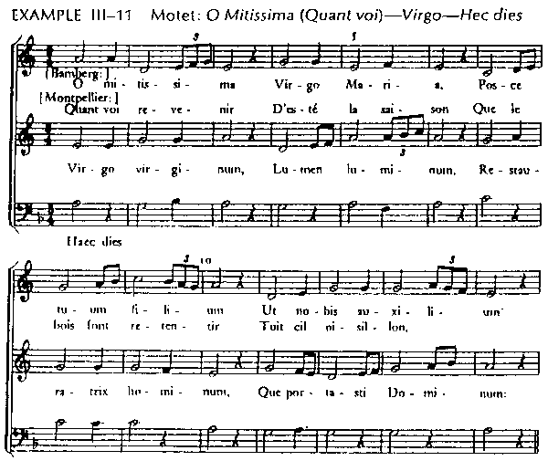
馬丁路德（Martin Luther）改革時期為要推行其宗教改革運動，讓愛唱歌的民眾藉著民歌的旋律來傳達其改革的教義，乃採取民歌或以民謠風作聖詩，其「上帝是我安全要塞」的原旋律就是一例，其他J. S. Bach配和聲的數首聖詠如“Innsbruck”原為一首流行歌"Innsbruck我今須離你"，當時可能由Johann Hesse（1490-1547）填新歌詞“O World, I now must leave thee”（世界，我今須離你）而成為葬禮的聖詩（Young 1993: 509）。Bach由曾在聖馬太受難曲中使用多次的Passion Chorale後來改填詞「聖主頭額今受傷」（Paul Gerhardt,從Latin譯成德文）可說是德國聖詩中最神聖感人的一首，有誰能料想到它本來是一首基於Hans Leo Hassler（1601）所作失戀的情歌“我心情雜亂都因一位美少女”？（Young, 1993:526f； Glover 1990: Vol 1, 289-298）。
20世紀採集民謠旋律與聖詩歌詞結合的最佳例子是英國The English Hymnal（1906）的音樂編輯Ralph Vaughan Williams的傑作，其中最常唱的是「大家吟伯利恆的詩」（“O Sing A Song of Bethlehem”，KINGSFOLD）及“I Sing the Almighty Power of God”（我歌頌上主大權能FOREST GREEN）。
以上所舉數例旨在指出聖詩自始就與各地民俗的音樂有密切的關係，現在我們來看台灣基督長老教會的音樂情形如何。（本文所牽涉的範圍除十七世紀之外，僅限於台灣基督長老教會，其他教派因缺乏資料，恕不討論）。
二、十七世紀傳入台灣的歐洲聖詩
1624年荷蘭人擴展其東印度公司及在爪哇的商業基地佔領南台灣，至1662年被鄭成功趕出的37年間一共派遣了35位歸正教（Reformed Church）的宣教師，以Zeelandia（台南安平）為中心擴展到新港、麻豆等平埔族中傳道。據報宣教師Robertus Junius (1629-43)曾為5900位原住民（有謂6400名，見徐、鄭1965：2）施洗入教會。他們也日夜開課，教導大人與小孩識字及背誦基督教要理問答。在1647年之報告中，謂有少年577位及成人800位在五個部落受教育（H. Chen 1947: 26）。據1638年二月五日之台員日誌（Tayouan Day Journal）記載：「…每日教導少年們，且教唱歌…用新港語以詩篇100篇的旋律唱『主禱文與信經』」（Campbell 1903: 161）。
較早先在1636年的報告也記載「在Junius先生與荷蘭住民領導之下，學校男孩們在講道之前及之後唱歌，以最富教育性的方法，依大衛的詩篇第一百篇的旋律，以新港語唱一首聖詩」（Campbell 1903: 147；參閱Loh 1982: 62-65, 409-412）。以前筆者誤認此為加爾文（John Calvin）請Louis Bourgeois（1511）編輯 <日內瓦詩篇>（Genevan Pslter）中之曲調OLD HUNDRED，即今台語<聖詩>34首「天下萬邦萬國萬民」之調（Loh 1982: 64-65, 409-410）。
但據江玉玲教授從荷蘭聖詩之研究，這首「大衛的詩篇第一百篇的旋律」是荷蘭之Peter Datheen牧師在1566年所出版<大衛詩篇>（De Psalmen
Davidis）中源自法文韻文詩篇的第100篇的旋律（例2），這首也是Louis Bourgeois所作（江2001：169-171, 179）。
（例2）
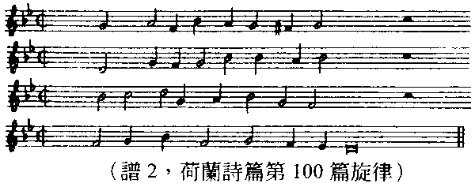
根據以上之描述荷蘭人的宣教一定教導當時的原住民（平埔）信徒唱一些聖詩，所惜者並未有明文記載，只有這「老一百首」出現多次，這証實了台灣原住民早在1636年左右就接觸到從歐洲移植來台的音樂／聖詩。因當時的記事中未再提起唱某首聖詩之事，吾人可猜測十七世紀歐洲歸正教會的聖詩似未能釘根，對台灣簡短之影響可能在1662年就劃上了句點。
三、台灣最早的平埔調聖詩
蘇格蘭長老教會宣教師馬雅各醫師（James L. Maxwell）於1865年五月27日（或28日）抵台灣，六月16日在台南看西街正式租屋佈教、醫病（駱1964：135f；徐、鄭1965：7f）是南部傳教的開始。北部則有加拿大籍的宣教師偕叡理牧師（George Leslie Mackay）於1872年三月九日在淡水上岸，正式傳教。因傳教與禮拜都無法離開唱聖詩，故初代台灣教會所用的聖詩是借用廈門基督徒所唱的<養心神詩>、<基督徒詩歌>、<蒙學堂詩歌>及<孩童詩歌>，後二者是小孩用的，而前二者大都屬於培靈會的聖詩。據歷史記載1900年之前台灣南北教會均用這些詩，而以<養心神詩>為主（駱1964：137）。按1854年之<養心神詩>只有13首，1872年福州美華書局之刻本己有59首（賴1988）。1900年宣教師甘為霖（William Campbell）曾在南部編印<聖詩歌>即以59首之<養心神詩>為主，加上一些其他聖詩，裡面有否台灣之新作，惜因無原始資料，無法查考（駱1964：137）。
（一） 本土第一本聖詩（1926）
1926年台灣大會以宋忠堅牧師為代表出版一本192首的<聖詩>，是羅馬字與五線譜[琴譜]版，且注有Tonic
Sol-fa之唱法，其中含有六首本地平埔原住民的曲調，即
第一首「上帝創造天與地」調用TAM-SUI「淡水」（今<聖詩>之62A ）
（例3）
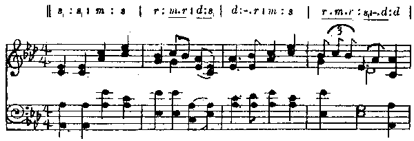
TAM-SUI「淡水」之主旋律與現用之旋律有些不同。第一譜表之第四小節
| 232 5. 1 1 |不知是否即該曲的原型，在1936年版已延長了一小節，變成
2. 1 5 1|1- - - ||。筆者相信232可能較近於原旋律富有裝飾性之美。編曲者雖不得而知，但很明確是以西洋傳統I IV
V三個和弦及其變化為主的簡單和聲。
廈門之宣教師J. H. Young寫的詞非常優美生動，至今我們隻字未改，只有第五節h?g膶（單數）自1936年版被成h?go》（複數）。
第二首「真主上帝造天地」調用TOA-SIA「大社」（63首）
（例4）
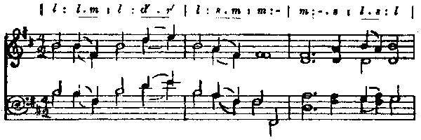
第48首「世人紛紛罪惡多端」調用GI-LAN「宜蘭」
（例5）
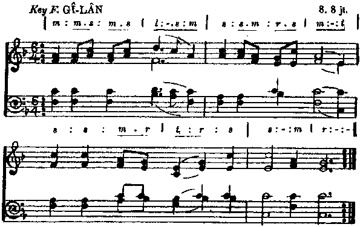
「宜蘭」這個旋律可能來自宜蘭地區之平埔調以 拍之節奏，又以F大調的和聲（I IV V 及V 7）處理，但旋律中根本沒有F音的存在 。按原住民貫用的五聲音階，它應當是3 5 6 1 2，即以6開始5終上，故以F大調和聲實有不妥， 拍之節奏也很不尋常，其真相如何有待進一步研究。
這首曲子在1936年已被取代，1964年版（198首）更改用中國的楊蔭瀏之曲調「神愛」，其歌詞第二節「照我光明棄惡歸善」已修改為「照我光明改惡從善」，最後一節「就好去見上帝的面」變成「就會去見上帝的面」。
第107首「導到天堂永活所在」調用TAIWAN「台灣」
（例6）
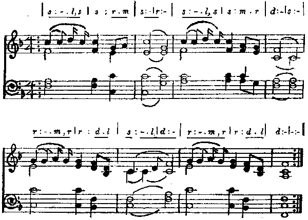
TAIWAN這曲調很有特色，a a' b b'的曲式，每句之前三拍都是同樣的動機，是一首非常完美的曲子，可惜不知為何被割愛。其歌詞除第一字「導到」改成「透到」外，有許多用詞均已改成更文雅或現代的語法。
最後第二句「懇求耶穌降落聖神」也改成「懇求上帝降落聖神」，在神學上較為正確。
第131首「咱人性命無定著」調用BAK-SA「木柵」
（例7）
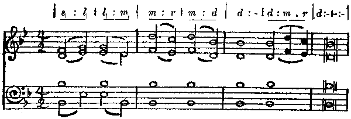
台灣至少有二個地名叫「木柵」，一在高雄縣，一在台北縣，筆者雖猜這首曲子可能是源於南部的平埔族，但它真正的來源仍待考証。
增補第8首無歌詞，調名“FORMOSA”
（例8）
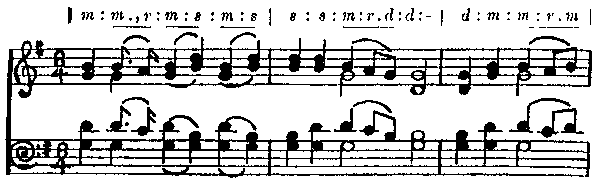
在六首曲調中，這首FORMOSA可說最活潑，但無歌詞，只知道它可配8 8 8 6的詩，曲式的組織也很完整（a b c a），同樣是以西洋傳統和聲I IV V。可惜這首也在歷史中被淘汰了。
分析此六首曲調使我們了解這些都屬於原住民或已漢化的平埔風曲調。
非常令人驚喜的是宣教師們在台宣教不久就意識到應當採用本土的音樂素材。除最後一首FORMOSA無歌詞外，其餘五首分別為來自廈門〈養心神詩〉中之第一、三、九、八、四十首的歌詞。是誰採集當時原住民的曲調，然後作媒配上上列的歌詞，又以西洋手法譜上和聲？不管其品質如何，以當時有限的音樂文化常識，這都是值得肯定的。依筆者對原住民音樂的了解，相信這些樂曲的記譜法一定簡化了許多，原來的各種裝飾音、滑音都已被省略，且很難確知哪一首是屬於那一族，但如以上所述，從調名可推測可能與住在「淡水」、「大社」、「宜蘭」、「木柵」不同地區的平埔族有關。“TAIWAN”與“FORMOSA”二曲則尚無法推測。筆者很早就知道北部的馬偕博士對音樂與寫詩很有興趣，筆者在淡水教會上主日學時（1946-48）也常受教於馬偕的媳婦及孫女（偕安蓮）。在研究早期的聖詩時就常聽說馬偕曾採集「拿俄米」一曲（此曲之來源所牽涉的問題甚多，與本文之主旨無關，故不多解釋）。故一直懷疑可能「淡水」、「大社」與「宜蘭」都與馬偕先生有關。幸虧最近內人在整理岳父蘇天明牧師的遺物中，無意間發現一張馬偕博士的外孫柯設偕先生寫給岳父之短信，說明聖詩285首「我有至好朋友」即李庥牧師（Hugh Ritchie）作詞，另附言謂
「聖詩第62A「上帝創造天與地」之譜─曲調，乃當時馬偕博士由原住民之曲採集改編，曲名便宜上命名『淡水』，
第63首「真主上帝造天地」之譜當時亦由原住民之曲採集命名『大社』。一八七二年，馬偕及南部李庥德雅各訪大社。很可能他們由大社原住民之曲採之」。
此意外的收獲至少解開了部份台灣最初期聖詩曲調來源之迷。然而柯設偕的說法與<聖詩>上所記的年代確有些混淆不清。
因1936年版的<聖詩>明記TAMSUI是「平埔調1870」！依編輯常識，這是指該調於1870年被用來配歌詞的與／或編曲的，若1870年是正確的，則這曲調不是馬階博士所採集的，因他是1872年才來台的，故這有三種可能的解釋法：
（一）這個曲調是南部某位宣教師在1870年所採集。
（二）柯設偕先生的說法若正確，則可能馬偕在某年拿這別人已記譜的旋律配此歌詞。
（三）1870年可能是廈門宣教師J. H. Young寫詞之年。
但此歷史年代的問題尚待進一步的考証。無論如何我們感謝以馬偕為代表的早期宣教師在台宣教的初期即已体認了釘根本土、教會音樂本土化的重要性，並奠定了基礎！倘這兩首（及其他各首）確為馬偕先生所採集，因他於1901年逝世，故這些平埔調的聖詩必定在1901年之前已在教會中使用，至今已超過百年的歷史，非常可惜的是在1936年出版342首的<聖詩>中「宜蘭」、FORMOSA與TAIWAN之舊調已被淘汰了！
（二）1926年<聖詩>中還選有六首廈門傳來中國人的曲調，即
HERALD：62B「上帝創造天與地」（1 12 3 32 | 1 1 1 -）
AI-CHH暳（哀慘）111「大家著看上帝聖羔」（6 | 6 - 5 | 5 - 12 |3 - 2 | 2 -）
LENG-NA（靈籃？）194「我行迷路耶穌近倚」（1 |3 - 3 | 2 1 6 | 1 - 3 | 5 -）
KIANGSI（江西？）210「上帝律法第四誡」（56 1 | 653 5 | 65 3 | 21 3）
CHIN-CHEW（晉州？）270「阮父上帝坐天頂」（55 | 3 2 16 | 1 -）
SINIM 340「嗎拿各日有在落」（2 3 5 5 | 2 3 1 -）
以上曲調至今仍存在於今日的〈聖詩〉中。其中三首3/4拍，缺乏中國民謠的特有風格外，其他各首可能跟民歌有關，或可能是中國基督徒所創作的。
（三）台灣的第一位聖詩作家
此詩集192首中因都未署作者與翻譯者之名，故無法確知有否台灣人的作品，依當時之領導權完全操在宣教師手中之情況判斷，本地人可能還未有機會寫新的聖詩且被採用在聖詩集中的。我們從1936年的<聖詩>中才獲知1926年的<聖詩>中有五首是在台宣教師梅甘霧（
Campbell Moody）所寫的，其五個曲調也都是歐洲傳來的，即
16 萬君的主通愛的厝（RICHMOND今〈聖詩〉25「通愛」後改為「至聖」）
21 厝若不是主共咱起（DENFIELD 45）
22 我對深深陷坑（BARKWORTH 46）
75 受賣彼冥救主耶穌（SOLDAU 217）
81 主歡喜聽人祈禱（GLAD DAY 266）
這五首聖詩之詞與曲，後來均得以保留至今。除非1900年甘為霖在南部所編的〈聖詩歌〉已有宣教師所做的詞，或已有上述之平埔調，我們幾可斷定梅甘霧是台灣的第一位聖詩作家，作為一個英國人能以台語寫出這麼優雅的詩，其漢語的造詣實令人敬佩。李庥在1936年版<聖詩>雖有一首「我有至好朋友」（285）但在1926年版尚未出現。
四、本地聖詩創作的開始
台灣教會在使用1926年的<聖詩>六年之後已嫌不敷用，故於1932年由明有德牧師（Hugh McMillan）任主委，駱先春牧師為書記及編輯開始重新編輯〈聖詩〉，乃從日本<讚美歌>、西洋I. D. Sanky的〈Sacred Songs and Solos〉及其他歐美聖詩中選譯百餘首，於1936年12月1日出試用版347首的〈聖詩〉，依呂泉生教授的記述，當時的聖詩是由淡水中學的音樂教師陳清忠先生（他也是台灣男聲合唱團的創始人及英式橄欖球的介紹人）以臘紙騰寫（刻），經二、三年才刻完成試用版（呂1991：15），但是後來送往日本印刷途中慘遭戰火燒燬，幸虧陳清忠先生尚留有手刻本，後來才可以在台付印。筆者手邊尚有的版本（計342首 1962，第十三版）是根據民國二十六年（1937）十一月27日第一版再發行的。
在此<聖詩>集中台灣本地人及宣教師最早期所創作的聖詩如下：
堃詞曲作者
鄭溪泮：聖子耶穌對天降臨（91）調名LO-SAN「羅山」
（例9）
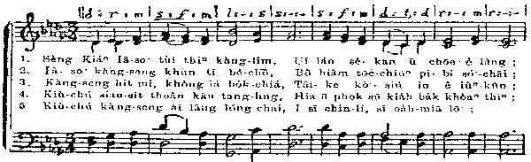
駱先春：求主教示阮祈禱（261）調名「砲臺埔」
（例10）
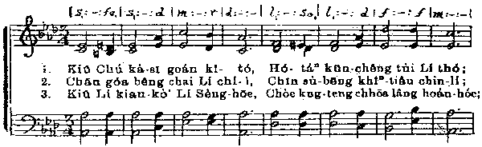
至聖的天父，求你俯落聽（263）調名「大甲」
（例11）
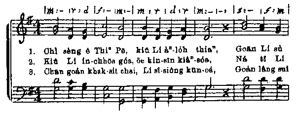
Margaret Gauld（吳威廉牧師娘）：
你若欠缺真失望（317）調名「雙連」
（例12）
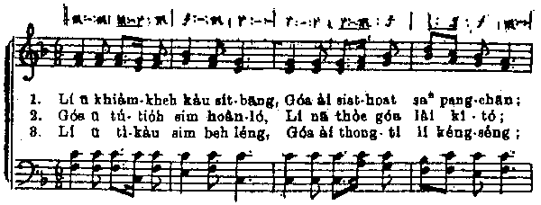
𡑔詩詞作者
明有德（Hugh MacMillan）：上帝聖經內面（184）
咱行世間的路（186）
駱先春：我的目睭欲舉高來向山（42）
天父極大又慈悲（498）
至聖天父阮感謝你（515）
梅甘霧（Campbell Moody）五首（已在1926年出版，見第300頁）
李庥（Hugh Ritchie）
我有至好朋友（285）
潘道榮：聖父上帝站天頂（61）
蘇振輝：在昔在郇城（128）
陳瓊琚：主耶和華至尊至大（169）
請咱大家大聲唱歌（170）
𤍣作曲
Margaret Gauld 與Marjorie Landsborough（吳牧師娘，蘭醫生娘）
GOLAN「吳蘭」（323）
（例13）
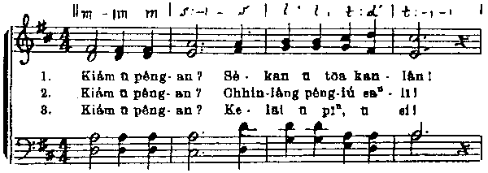
在這十位作者當中宣教師與本地人各佔一半，其中能兼作詞譜曲的有鄭溪泮與駱先春，寫詩詞的有蘇振輝、潘道榮與陳瓊琚。此十四首創作的聖詩成為台灣人初熟的果子，而其中有五個曲調，其旋律與和聲雖然都是模仿西洋的風格，尚未呈顯任何與台灣民謠風有關聯之素材，這正反映了當時宣教的理念，基督徒必須完全放棄舊我（台灣文化）而穿上新衣（西洋文化），學習西方福音詩歌的精神而創作了新的台灣聖詩，這些台灣人最早的創作，也是台灣基督徒至今很喜歡唱，且對信仰非常有幫助的聖詩。至於1926年出版的六首曲調中，只保留了「淡水」、「大社」及「木柵」三首，其餘三首可惜已被割愛。
五、台灣聖詩的新紀元
二次大戰後的世界變化非常快速，台灣教會已面臨空前的語言、政治、經濟、文化等的挑戰，對原來342首聖詩中很多十九世紀歐美福音詩歌保守、離世的神學思想及簡單、膚淺的音樂無法滿足，乃於1957年著手編輯新聖詩。由德明利姑娘（Isabel Taylor）擔任幹事負責籌劃，筆者有幸任其秘書，最後一年由楊士養牧師負責歌詞，筆者負責音樂之編輯，終於1964年二月，出版了今用523首之<聖詩>。
本詩集中台灣的新作品有詩詞54首，連同1936版之19首，共計73首，佔整本聖詩之13.95%，新的曲調有15首，與舊〈聖詩〉之5首合計20首，佔3.82%。這些比例雖然還小，但在台灣聖詩史上已開啟了新紀元1。
（一）台灣人的新作品如下：
1、詩詞
楊士養：讚美稱呼主耶和華（3）
主啊，是誰能可寄腳（4）
天頂講起上帝榮光（5）
地與其中所充滿的（7）
城門，當舉起恁的頭（8）
心內勿為惡人不平（12）
求上帝發出牦的光（15）
上帝是阮逃閃所在（16）
上帝講出來召天下（17）
懇求天父勿得趕我（19）
專務等候上帝（20）
主耶和華，錫安有人（22）
主眷顧地，降落雨水（23）
凡若心肝清氣的人（24）
主耶和華，天要稱讚（26）
居起至高隱密所在（28）
至高的主阮愛感謝（29）
上帝穿大威嚴做王（30）
咱當感謝主耶和華（31）
全地攏當向耶和華（32）
向耶和華來唱新歌（33）
我主耶和華，牦名是至聖（36）
恁當稱謝主耶和華（37）
上帝有對我主講明（38）
一切榮光勿歸給阮（39）
我心敬愛主耶和華（40）
恁當感謝主耶和華（41）
我所親愛的眾兄弟（74）
上帝將祂獨生聖子（118）
我越轉身過來（147）
全能天父是萬富有（224）
我今勸恁當獻自己（304）
我雖能講萬國音語（314）
計33首，其中32首為釋義詩（第224首是「定基」詩）
駱先春：主耶和華是我牧者（6）
人對我講，今咱來去（43）
我的上帝，我的君王（47）
主耶和華，𥳾造的物（48）
恁當對主出聲吟詩（49）
當讚美耶和華（50）
主耶和華聖旨立定（122）
天開一隻白馬出現（138）
阮今在主聖殿（226）（按牧）
心內貧窮的人有福（319）
我心尊敬我主做大（344）
天父阮大家齊聲（434）（週歲）
計十二首，其中十首為釋義詩
黃武東：上帝賜福中國各省（427）
懇求上帝施恩賜福（433）
聖子耶穌站地上（450）
陳溪圳： 上帝為咱，愛疼不變（119）（釋義詩）
聖徒看見天頂座位（153）（釋義詩）
鄭錦榮：當用基督耶穌的心（100）（釋義詩）
明有德：我的心神你當唱歌（69）
蘇天明：基督是咱家庭的主（431）
周天來：思念過往親人朋友（353）
2、曲調
駱先春：KAHOVOTSAN（434）
（例14）
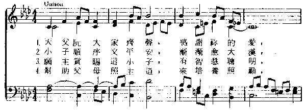
陳泗治：原作 TE DEUM LAUDAMUS（517）
（例15）
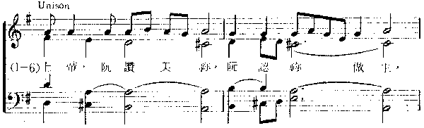
NUNC DIMITTIS（518）
（例16）
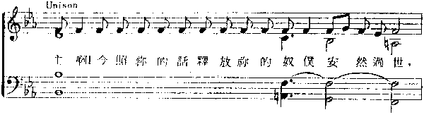
編作 B柍-SA「木柵」（233）
（例17）
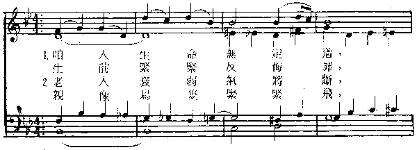
T淲-L?N磊「大老娘」（443）
（例18）
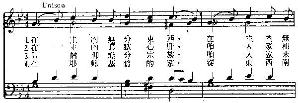
駱維道：原作PATUNAKAI「宣教者」（226）
（例19）
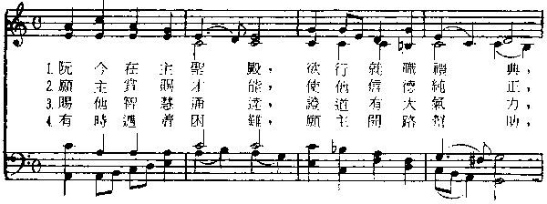
HU-SIAn「府城」（427）
（例20）
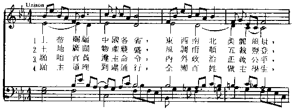
L?KANG「勞工」（450A）
（例21）
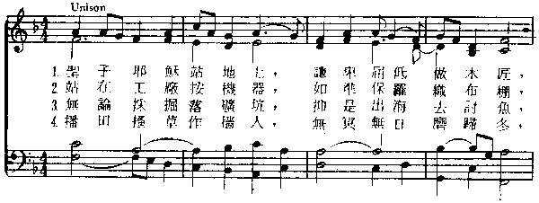
編作TAMSUI「淡水」（62A）
（例22）
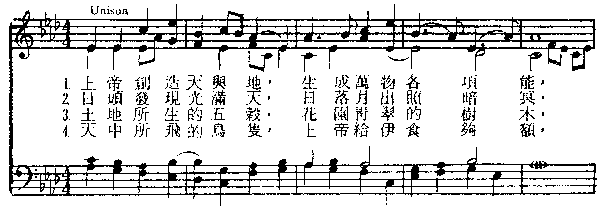
T淲-S適「大社」（63）
（例23）
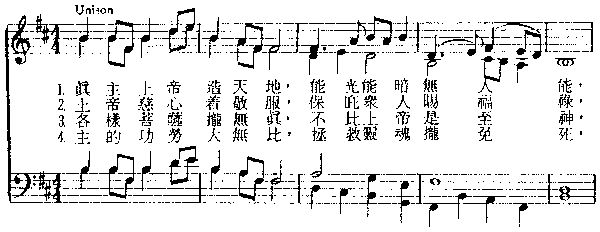
QUEM PASTORES（88）（德國曲調）
S煮G-CHHUN「承春」（97）
（例24）
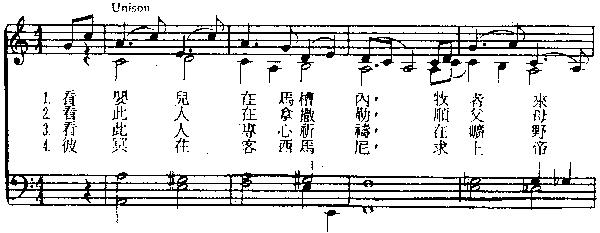
L?H?TH鄾「鯉魚潭」（199A）
（例25）
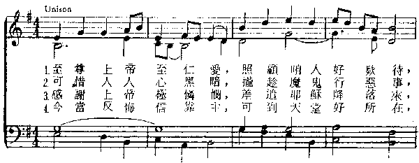
KIANG-SI「江西」（210）
（例26）
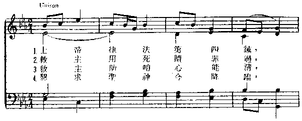
KAHOVOTSAN「生日」（434）
（例27）
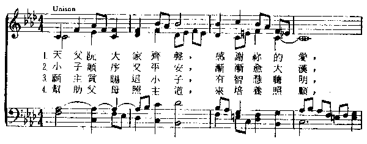
其他還有來自中國的曲調：
AI-CHH暳「哀慘」（111）、P?P浺「寶貝」（167）、L煮G-N鞢u靈籃」（194）、P'
U-TO「普陀」（244）、CHINCHEW（270）、TI𦮳「召」（329）、SINIM（340）、CECILIA（395）
及中國作者：胡周叔安（SAVIOUR'S LOVE 191、CHIA HSIANG「家鄉」 237），
楊蔭瀏（HOLY LOVE「聖愛」198），藍美瑞（宣教師） （THE BROOK CHERITH 254B）
（二）本詩集之特點
堃羅馬字與漢字並用，且將漢字植入譜內易於唱頌。
𡑔刪除舊聖詩中許多神學上及音樂上較不理想的福音詩歌，其餘保留在聖詩之後半部，使台灣教會之信仰表達漸離保守的基要信仰。
𤍣增廣了聖詩學的視野，採用許多古代、十八世紀以前及現代不同時期聖詩詞曲之經典作品，故提高了神學與音樂的品質與程度，如:
435 「青年的好牧者」, ascribed to Clement of Alexandria (150?- 220?)
242 「主求𠸊憐憫我」, Synesius of Cyrene (375-430)
376 「至聖天父，歡喜的光」, Greek, 4th C.
320 「上帝是咱安全要塞」, Martin Luther(1483-1546)
73 「今阮感謝上帝」, Martin Rinkart (1586-1649)
115 「我心仰望十字寶架」, Isaac Watts (1674-1748)
246 「上帝愛痛勝過一切」, Charles Wesley (1707-1788)
堦民俗音樂的風格已漸成形。（見下文(四)）
𤯵首次編入非常完整的曲、詞作者來源、格律、曲名、英文、漢字、白話字之首行及聖經章節等八個索引，以方便選詩及聖詩學之研究。
（三） 新聖詩情境化歌詞的表現：
與1936年版之<聖詩>相比，1964年版的<聖詩>其歌詞已較為文雅，且漢字用法較近於古典，過去較白或廈門音的字眼如ko�in- ko�in，已改成較台語的ko -kon。有許多用語均與台灣文化息息相關。今舉數例如下：
楊士養牧師為「奠基」或「獻堂」寫之聖詩224首非常適合本地著重之禮儀，其用語「男婦老幼同心敬拜」、「鼓勵奮起世道人心」，314首「若無仁愛就變空空，親像打鑼所做」均極合本地人的口味。
駱先春牧師所寫319首「心內貧窮之人有福，有份天國富貴」，最後二字是非常本土的表現法，434首為小孩做「週歲」（t?ch銵^或「滿月」是台灣風俗中之大事，其用語「宛然小天使」、「做教會棟樑」均屬台灣較為現代的用語。
黃武東牧師的聖詩可說是最富台灣特色的作品，不管是詩的用詞、平仄、節奏、內容均屬上乘之傑作，如433首「是大是小信主基督」、「父慈子孝，夫妻保老」、「待人接物為主見証」、「安份守己，敬虔知足」；450首之「無論採掘落礦坑，抑是出海去討魚」，「播田搔草作穡人，無冥無日磨歸冬，汗流滿面如珍珠」等都極生動，且與當時台灣人的生活息息相關。其427首「上帝賜福中國各省」（後改為「台灣各境」）句句都是台灣文化精髓的表現，對台灣人的歷史觀，對故鄉大自然之愛好與期待、對家庭社會之和睦、融合、對政治之公義及世界之和平都作了信仰上最簡要透徹的期許，求主賜福，可說是本詩集中最佳之代表作，今列全詩以供欣賞。
427首（「中國各省」改為「台灣各境」）
（例28）
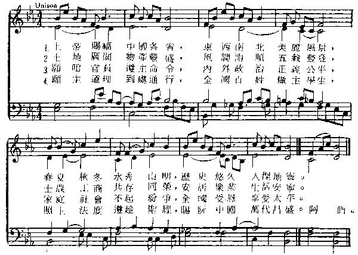
（四） 新聖詩曲調情境化的表現
在一共15首台灣人所作或編曲當中，除了一首（88 QUEM PASTORES）是為德國聖詩新配的和聲，還有210 (KIANGSI)是來自中國的旋律外，其餘的旋律都展現濃厚的台灣風格，其中的62A (TAMSUI)與63 (TOA-SIA)是從1926年版已有的曲調改配新的和聲。採自原住民曲調的有233「木柵」（<聖詩>中誤稱中國調，應改為平埔調），443「大老娘」（東部阿美調），97「承春」，199A「鯉魚潭」，後三曲均為先父駱先春牧師所採集的。517「讚美頌」與518「西面頌」是陳泗治校長自台灣漢人民間音樂之動機所編的吟誦曲。434 KAHOVOTSAN（生日）的曲調是先父仿平埔風的創作，由筆者和聲，226 PATUNAKAI（宣教者）及450A「勞工」均是筆者依歌詞之抑揚以五聲音階為主所創作的。427「府城」的動機則採自綏遠民謠「小路」。
以上這些曲調的風格中有三個特色：
堃旋律均有本土原住民（平埔）或漢人以無半音五聲音階為主的特性。
𡑔陳泗治校長的和聲採用浪漫派之半音進行（如233），及變化和弦（517、518）。
𤍣筆者亦模仿陳校長之風格（97），但喜用模仿音型與對位旋律（427、434），雖還未脫離西洋傳統十八、九世紀共曉時期之風格（Common Practice
Period），但已漸漸偏向調式和聲（62A, 63, 199A, 210）。
簡言之，從音樂立場觀之，台灣漢人所創作新聖詩的旋律已情境化地（contextualized）表達原住民（平埔）及漢人的風格，只是在和聲之處理技巧上尚停留在浪漫派及調式（modal）之共融（Syncretistic）風格，尚未突破、發展出一套適合於台灣調特有的風格。
六、台灣其他族群語言的聖詩
以上討論的是以人口佔70%講福佬話為主的聖詩分析，其他尚有客家人（約佔14%）及原住民（約2%）的聖詩，今簡介如下：
（一）客家聖詩的里程碑
台灣在客家鄉村的宣教雖然較為遲緩，且有困難，但二年前（1999）客語聖詩的出版卻在台灣教會音樂史上樹立了一個里程碑。我們要恭喜其主委邱善雄牧師所領導下之聖詩編輯委員們，他們花了七年的心血搜集、翻譯，編輯了這本聖詩，在350首中竟然有71首本土的曲調，其中30首是新創作，25首來自客家或本土民謠，還有16首原住民的傳統曲調或新作（見《客家聖詩》序）。這不但証明客家基督徒對自己文化的肯定，也表現他們開放、包容其他族群的音樂文化的精神，深信對他們今後的宣教及基督徒管家與使命的訓練會有積極的貢獻。以下謹舉數例說明。
「上帝疼惜世間人」（109）是多才多藝的范秉添牧師（信義會）所填的詞，他選台灣漢族中福佬與客家通用且最流行的民歌「五更調」，或名「五更鼓」，或「孟姜女哭倒萬里長城」即歷史非常悠久，從中國傳來台灣，家喻戶曉、普遍通行於民間的旋律，以非常客家化之語法解釋聖經中最重要的經節（約翰福音三章十六節）實有特別的意義（見例29）。雖然是清唱，但相信懂得該音樂文化的客家藝人會很自然地拉起二胡、椰胡或吹起笛子作活潑、有複音效果的伴奏。
（例29）
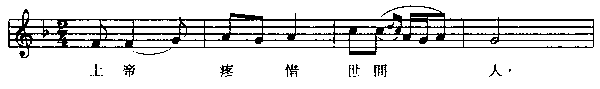
「敬拜上帝有智慧」（153）是陳建中依客家民謠風所譜之聖詩，他以輪唱（奏）的型式轉入複音的效果，未落入西洋和聲的俗套，是一成功的典範。
（例30）
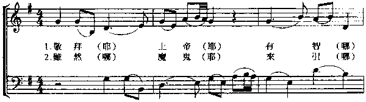
「聖子耶穌來降臨」（247）是彭德政長老以「八月十五喜洋洋」之曲填上傳報聖子耶穌出生的佳音，詞曲之配合極為完美，喜氣洋洋之音樂與哈利路亞之讚美聲構成一幅優美的聖誕畫，是不可多得的優良作品。
（例31）
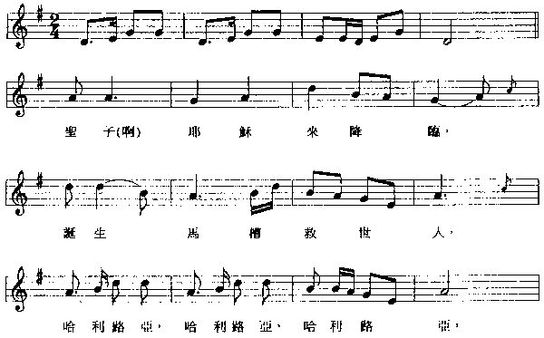
這些採自民間音樂的曲調均保留原有的前奏或間奏，故保存了該音樂的完美性，且不配以西洋和聲，這是尊重民俗音樂的最佳表現。
（二）原住民豐富的聖詩資源
台灣在日治時代已有漢人或宣教師或原住民（如芝苑）對原住民宣教的紀錄，但有計劃的宣教及教育始於1946年九月十五日，當時溫榮春牧師受孫雅各牧師之委託前往花蓮富世村的「立霧館」開辦聖書學校，栽培傳道人。一九四七年則有胡文池牧師到關山在東部布農族宣教。同年駱先春牧師到台東地區在阿美族、卑南族、排灣族、魯凱族中開拓傳道，於一九五一年五月十三日也到雅美族（達吾）設教會（徐、鄭1965：369f,
398）。南部則有黃素娥女士與許有才牧師自一九四六年開始在排灣族中傳道（徐、鄭1965：427-429；于1992：1-6）。數十年間原住民教會的興旺曾被稱為是「20世紀宣教的神蹟」。除了原住民秉性善良，羨慕福音外，教會聖詩美妙的音樂與他們喜愛且善於歌唱的恩賜對教會的宣教與增長有莫大的助益。半世紀後的今天，他們各族均已有其本族聖詩集的出版。筆者收集十一本詩集中最早的是先父駱先春牧師之阿美聖詩（一九五八年），其中已有採用阿美民歌轉化為聖詩的（如150“Surinai
a pituulan”）。
（例32）
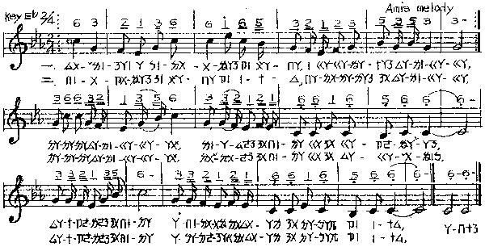
今謹舉近年來之數例以呈示原住民聖詩創作的近況。
堃阿美族
〈西美中會詩歌集〉（Sapahmek to
Tapag，1992）是西部都市阿美族之聖詩集，共有200首，其中最前面四十首都是採自本族或他族之傳統民歌，或經改編成或新創作的聖詩。曾美麗譜曲填詞的“O
Kalimlaan a Limo'ot”是依傳統三四部合唱簡化成的二聲部聖詩，第二部應為女高音所唱花腔式的旋律。
（例33）
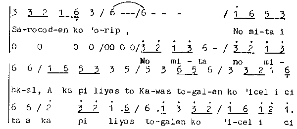
另一首是筆者採譜填詩篇136篇之詞，林清賜牧師翻譯之“O Sapikansya a
Radiw”（#4）。這是典型的啟應唱法，會眾的回應部份是三部合唱，主旋律之外每次略有改變，但到最後數音的終止則歸回齊唱。
（例34）
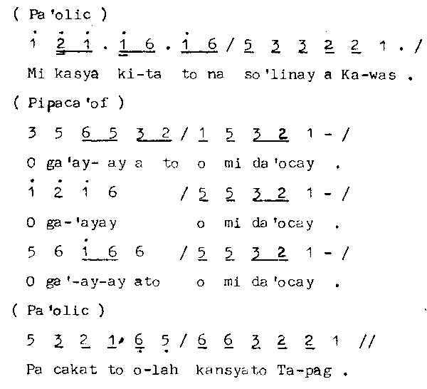
𡑔布農聖詩
手邊之第一本布農聖詩是1975年九月十五日由布農聖詩委員會出版的，一共有375首，是布農語與台語（漢字，及少部份是北京語）的對照，使用簡譜。其中有12首是採自布農傳統旋律（112,
156, 158, 162, 168, 187, 188, 195, 211, 215, 244,
277），一首泰雅調（51）及一首流行曲式的旋律（57），其他還有數首是台灣平埔調（166），中國（330,
327）或日本（190）的。且有簡譜的索引，容易查詢。
布農的合唱大都以do-mi-sol為主軸的合唱，從二部到五、六聲部之同節奏（homophonic）和聲，彰顯自然泛音構成之美，是其他民族的音樂所沒有的。雖然聖詩中之譜只記主旋律，但會眾會很自然地配上和聲，其和聲雖有些因人而異的唱法，但其傳統的標準唱法依筆者的研究（Loh 1982: 326-330）最後之終止音應為do-sol的和聲，沒有三音mi，倘有，則是近年來所加的。
1984年出版的布農聖詩一共有360首，其中布農傳統旋律共計23首。
# 271"Kuda Kauna Makanmihdi"（到我這裡來以得安息）是大家很喜愛的一首詩。
（例35）
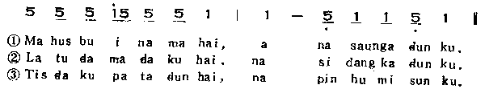
另外一首269“Paiska lau Paku”（從現在開始努力向前），由會眾回應U-I-Hi的唱法，今已傳到國外普世教會的聚會中。也許我們可試唱唱看。
（例36）
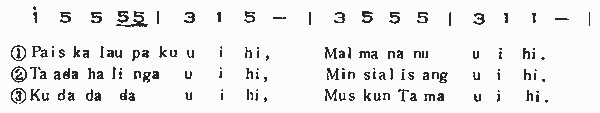
𤍣排灣聖詩
排灣族之第一本「聖詩」Senai tua Cemas是宣教師懷約翰牧師（John
Whitehorn）當主編，於1967年出版的，計208首，以注音符號ㄅㄆㄇ及簡譜（四部）鉛印，其中每首之國別及調名都記出，且含有許多歐美重要的聖詩，如德國的WATCHET
AUF（48），英國的DIADEM（52），法國的聖誕頌歌IRIS（18），這些詩當時都還未出現於台語的聖詩，可惜尚未採用排灣調，他們只採用一首平埔「大社」（9），還有一首似流行曲風的歌（195），其他三首日本的聖詩（43
WAGAKO, 183 HAHANO MISUGATA, 與192 AKATSUKI）。
最近一本〈排灣聖詩〉（Senai tua
Cemas）於1996年出版，410首中有80首（331-410）是由排灣或他族的傳統旋律改編或新創作的聖詩，有些新作已離傳統的風格，但其中不乏保持族歌特色的聖詩。
370 tau cike liyamapulat是單旋律之歌謠。
（例37）
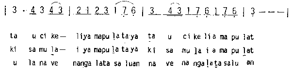
350 mali mali則為古調二聲部之合唱，其第二聲部是由男聲齊唱續現低音（reiterated
drone），演唱時最後終止音要有力地唱下滑音（breathy terminal glide）才能表達其風格。
（例38）
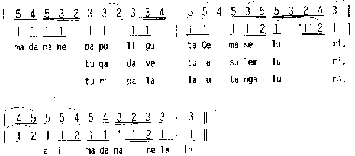
堦太魯閣聖詩
1994年出版的〈太魯閣聖詩〉（Suyang
Uyas）計有330首，其中本族的聖詩計有36首（295-330）是採自傳統旋律或依傳統風格創作的聖詩，這些採譜及新作的重要推手是莊春榮牧師（Hayu
Yudaw）。本詩集的優點是大致保存了Truku簡單四聲音階（re mi sol la）的原型。如302 Taga Han（請等待）
（例39）
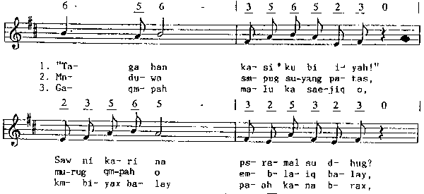
七、台灣聖詩創作現況：
除了上節所介紹客家與原住民聖詩曲調中大都是直接採用傳統的民歌外，今日台灣教會從事聖詩詞曲創作的並不很多。今依創作風格之差別簡介如下：
（一） 以西洋傳統和聲為主的作品：
長老教會有數位相當活躍且多產的聖樂作曲家如蕭泰然教授與楊旺順老師等，他們二位都是以創作詩班之合唱曲為主。蕭教授並且有許多交響樂曲、協奏曲、獨唱曲的作品。他的風格是源於古典及浪漫派的，其旋律大都極為抒情、優美、動聽，雖偶用民謠風的五聲音階，但其和聲的處理均展現其精通古典及浪漫派的技巧。又因他是一位出色的鋼琴演奏家，其歌曲常有極為華麗的伴奏，且喜用德國增六和弦，減七和弦，及大小調混合和弦（蔡1996：92-99〉。雖然他的作品均屬合唱樂，但有些亦可作為會眾聖詩，如「耶穌召我來行天路」（例40）、「主禱文」等。
（例40）
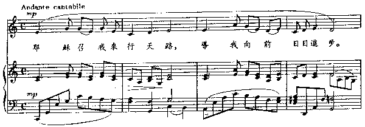
楊旺順老師已出版了廿多集三四百首的合唱曲、兒童合唱及前奏曲。他的作品幾乎都是以西洋的調性和聲為基礎，他雖從未直接採用民謠旋律（蔡1996：54），但他常也喜歡用無半音五聲音階，以表現本地旋律的風格。有些較簡單的曲子，亦可能做為會眾的聖詩。
（例41）
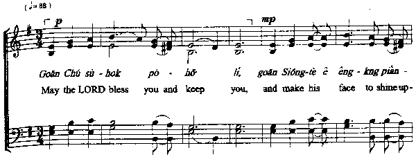
另外，非常執著於台語文學之創作的顏信星牧師也作了不少曲子。許天賢牧師所寫的「望鄉」（我靈所望天鄉）由他譜曲，以似分解和弦的伴奏，堪稱佳作。
（例42）
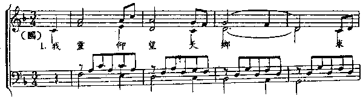
長老教會1985年出版的新聖詩（Ⅰ）共六十首中，有四首是本地人的創作，其中二首由李景行牧師作詞曲，「客西馬尼花園內面」（25）（例43）及「懇求天父與阮住」（37），兩首歌詞都甚佳，旋律則均以五聲音階為主，富有台灣味，和聲雖為西洋的，但（第37首是宣教師安禮文（Raymond
Adams）之和聲）已有些離開傳統之跡象。
（例43）
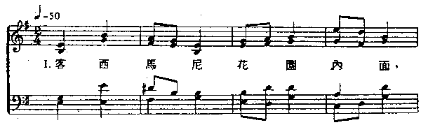
（二）近於流行樂風的青年新作
天韻歌聲之作者群所出版之聖詩在20多年前就開了台灣流行風聖詩之路，其中以吳文棟先生所創作的「野地的花」最為膾炙人口。他們在電視上的表演相當引人，那種平易近人的詩歌對年輕人有很大的影響力。
（例44）
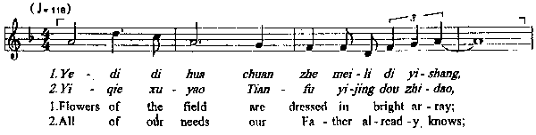
近年來另一有力團體是以美國加州洛衫磯為大本營的「讚美之泉」作者群，出版了許多新歌，亦多以流行樂風，有的旋律依福佬話的抑揚而發展，令人朗朗上口，又加以流行「敬拜讚美」式的西洋和聲、吉他和弦、爵士鼓等之伴奏，讓老少迷醉於不必煩惱，樣樣都是上帝預備的情懷中，如「耶和華祝福滿滿」已成為基督徒家家戶戶所喜愛的流行聖詩。
（例45）
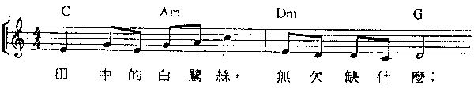
另在「長春詩歌」第二集中有數首是將半世紀左右以前的台灣流行歌填新詞而成為聖詩的，如鄧雨賢的「望春風」變成「大家牽手又同心」，張邱東松的「燒肉粽」變成「相愛疼」，楊三郎的「港都夜雨」變成「今日咱著儆醒祈禱」，這些都是有趣的媒人撮合物。雖有少數人喜歡唱，對慕道友可能也有些吸引力，但我們必須考慮從流行歌要變成聖詩之間除原歌之感情或劇情的聯想之外，一般人對流行歌的評價、態度，音樂的風格與品質及其功用，都須受神學及時間極大的考驗。
原住民的許多歌原為「無意詞」，在不同的情況又可即興填新詞，故改成聖詩對族人並無不妥之感受，只要小心處理深信會有輝煌之成果。至於一些漢人歷史悠久的民謠是人民的生活藝術之產物，有的因已有許多不同的歌詞，演唱者隨時隨地可即興填詞，故填以基督教信仰之歌詞也是很自然的現象，但最好也須經過創作改編的昇華及神學的評估才會有更長遠的價值。
（三）筆者尋根創作的嘗試
筆者年輕時由模仿西方福音詩歌的風格開始創作聖詩，經過以具有漢人風格之五聲音階的旋律配以西洋傳統和聲，到近於調式和聲，最後完全脫離西洋和聲之原理，以複音對位之技巧展現東方旋律美的理想。1970年代出版鄭兒玉牧師之「世光地鹽」（〈新聖詩I〉48）及Fred
Kaan之「上帝托負人類管理」（53），其和聲是運用平行四度及對位旋律，英國教會音樂評論家Erik
Routley曾評論「世光地鹽」以無半音五聲音階譜成的對位如三聲部的Invention（巴哈創意曲）（Routley
1981:183）。廿餘年來筆者為追尋亞洲音樂特色而曾模仿亞洲各民族傳統音樂的風格作了多首聖詩，如收錄於亞洲基督教協會之聖詩<Sound the Bamboo:
CAA Hymnal 2000>中之「上主做咱天頂父親」（The God of Us All，181，日本風），「耶穌釋放得自由」（Jesus Christ
Sets Free to Serve，247，韓國風），「喜樂和平兒」(Hunger Carol，144，印尼風），「愛痛聖神」（Loving
Spirit，220，印度風）等，且各配上與該相關文化相似或自己流的和聲（詳見駱2000：398-427），可惜因在台灣很難找到好的詩詞，這些詩大都是外國人的作品，筆者以英語譜曲後再翻成台語，在從這些民族音樂中獲得啟發之後，筆者重返自己台灣本土的音樂文化來尋根與靈感。從拙文「向耶和華唱新歌（四）-
從恆春到地球村」（駱2001：1-19）裡筆者列舉摘取台灣民族音樂之精髓所創作的聖詩：八首以「思想起」或其他民謠為動機（例46
「上帝賜福台灣各境」）、四首以客家民謠（例47「人生常活矛盾內面」）、三首以南管或台灣樂器（例48「上主關愛」）、十首以原住民不同風格所譜之聖詩（例49布農「活命米糧」），已完全擺脫西洋傳統和聲之束縛，而以對位複音效果或原住民各族特有的多聲部唱法，在在皆以所尋得台灣各民族音樂文化之根為基礎、架構而譜成新曲。這些尋根的創作仍在嘗試階段，還未成熟，尚待改進，敬請諸位先進不吝指教。
（例46）
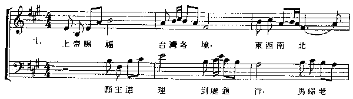
（例47）
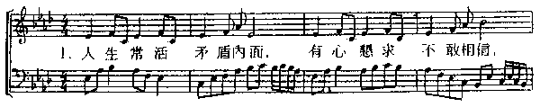
（例48）
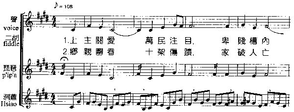
（例49）
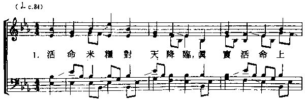
結論：
綜合以上之尋根，我們可做以下的結論：
（一） 人類學者相信今日全球約有七千種語言與文化，每個文化亦都具有其獨特的音樂藝術，以這些特有的藝術表現其精神或傳達其思想、感情、或宣揚其崇高的宗教信仰是他們與生俱來的權利，其作品有其無可否定、無可比擬的價值。
（二） 台灣整個社會與教會因受西方文化之影響過於嚴重，一切音樂藝術表達均以西方之審美觀與價值觀為依據，致使大多數的百姓失去了自己文化的根，尤其音樂人只能欣賞、接受西洋古典或現代流行音樂，教會與學校教育所培養出來之崇洋心理，使他們很難認同或尊重本土的音樂文化。近年來雖已有改善的現象，但絕大多數的教會音樂創作者、欣賞者與會眾仍傾向於或滿足於西洋或模仿西洋的聖樂作品，很難找到根。
（三） 當我們台灣的政府與教會正積極地爭取在國際上被重視之際，除政治、經濟、科技、學術及神學之外，音樂藝術文化亦應有獨特的貢獻。為達此目標，筆者認為有二條路可走：
堃台灣的作曲家應善用普世與本土的素材，再接再厲地提升、精通西洋及現代的作曲技巧（如日本的照相機工業與錄音機工業一樣，作得比歐美更精、更美），方能創作比西方更卓越更感人的現代音樂與現代教會音樂。
𡑔認同、尊重本國各民族之音樂文化，挖掘、尋找、研究我們台灣音樂的根、音樂的靈魂，創作能展現台灣各族群特有風格與和聲的作品，方能讓世界及普世的教會在台灣的音樂與教會音樂裡分享到與其他民族迥異、台灣人獨特的音樂藝術。